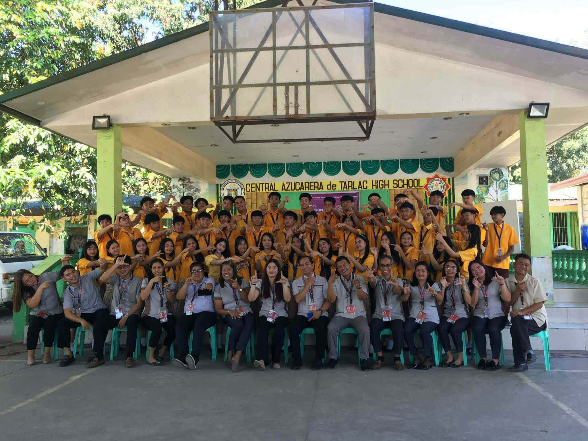
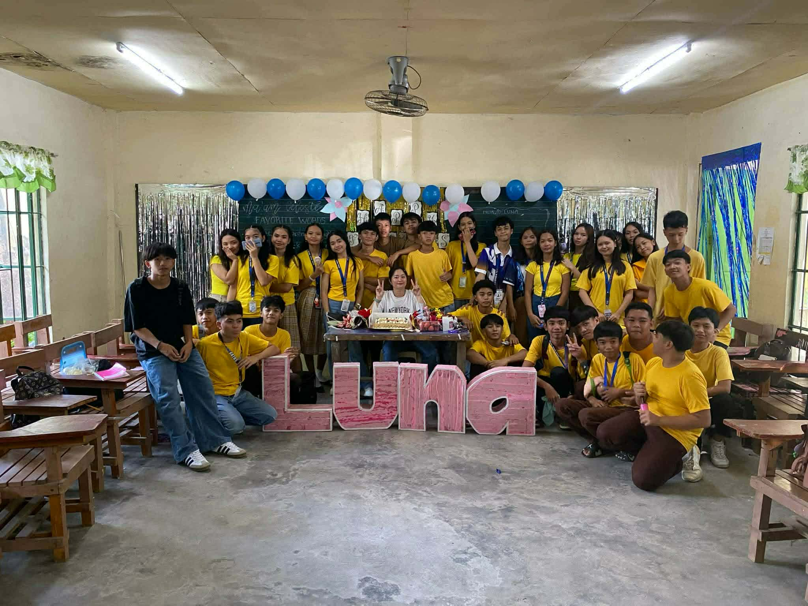

Chapter 2
Classmates
And of course, I will never forget Luna. Aww, my Luna — I miss you so much! When I remember all our memories together, they were so great. It feels like some of you have moved on with your lives, but I am still here at the restaurant… looks like I still have a lot of bills here, HAHAAHAHA. But how could I leave? This is where all our friendships and memories were made. This is where we laughed, worked on projects even when we were stressed, and practiced together. I will not leave this place until everything is settled. Thank you so much for being part of my life and for helping me become strong. ❤️
"Some classmates became friends, and some memories became lifelong treasures."


